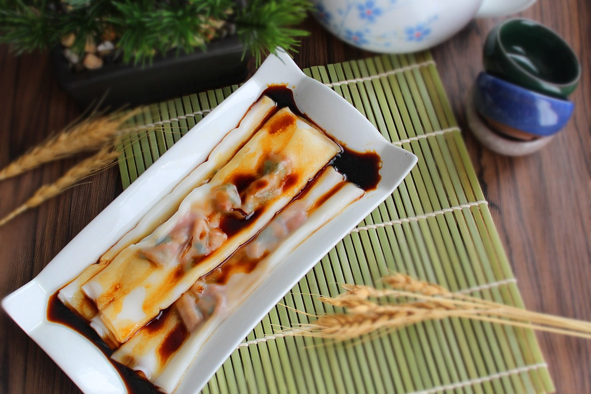

Shrimp Rice Noodle Rolls

Description
Shrimp rice noodle rolls, a classic dish in Cantonese cuisine, are a
delightful and delicate treat that tantalizes the taste buds with their
subtle yet exquisite flavors and textures. These translucent rice noodle
sheets, made from a mixture of rice flour and water, encase succulent
shrimp, creating a harmonious marriage of seafood and soft, silky rice
wrapper. The shrimp, often marinated and sometimes mixed with minced herbs,
add a burst of savory umami that perfectly complements the gentle
neutrality of the rice noodle roll. Served steamed and drizzled with a
light soy-based sauce, these rolls offer a delicate chewiness and an
inviting tenderness that practically melts in your mouth. The dish strikes
a balance between simplicity and sophistication, making it a beloved choice
for dim sum enthusiasts and those seeking an elegantly satisfying dining
experience.
Ingredients
- 14 prawns sliced in half
- 1 tsp of white pepper
1 tsp of salt
- 1 tbsp of Chinese cooking wine (optional)
- 2 tbsp of chopped green onion
- Rice rolls
- ½ cup of rice flour
- ¼ cup of tapioca starch
- 1 ½ cup of water
- 1 tsp of salt
- Sauce
- 1 tbsp of dark soy sauce
- 1 tbsp of soy sauce
- 1 tbsp of oyster sauce
- 1 tbsp of sugar
- 3 tbsp of warm water
- 1 tbsp of sesame oil
Steps
- Marinate prawns with white pepper, salt, and Chinese cooking wine.
Set it aside for 5 minutes.
- Mix dark soy sauce, soy sauce, oyster sauce, sugar, warm water, and
sesame oil to prepare the sauce.
- In a bowl, mix rice flour, tapioca starch, water, and salt. Make sure
that there are no clumps, and always ensure everything is fully mixed
before using.
- Prepare the steamer. Once the steamer is hot, lightly oil the pan
with a brush and place it flat in the steamer.
- Add in ½ cup of the rice flour mixture and make sure that every part
of the pan is covered in the mixture and the pan is entirely flat. Put
the lid on and let it cook for 1 minute.
- After 1 minute, the rice roll should be slightly translucent.
Sprinkle on the chopped green onion and lay down 4 pieces of prawn.
Cover and let it steam for another 2-3 minutes.
- Remove the pan from the steamer and let it cool down for 2 minutes
before rolling it up. Repeat the process and make sure to mix the rice
flour mixture between every portion.
- Once the rice rolls are all completed, pour on the sauce and garnish
with green onion.
Recipe taken from
Tiffy Cooks
; description generated by
ChatGPT